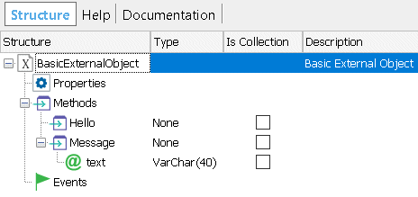

Suppose we want to add a new feature to the iOS environment to show a 'non intrusive' message to the user. You can create a Native External Object within GeneXus; publish the desired method and properties to be called and do the implementation to integrate with the iOS platform. Below there is a walkthrough you can follow to create an External object for the iOS platform. You could use external implementations such as Toast-Swift or create your own. In this example we will create our own implementation to show a Toast message using a label and an animation. Info: There is a living code sample for the external object in this document that can be found on GitHub. Take a look at Smart Devices Extensions Repository Sample .
Create an External ObjectCreate a new native object called BasicExternalObject.  Add a new method called Hello with the following values: Is Static: True Add a second method called Message with an Character argument. Once the external object is saved, you can use it with the following syntax: BasicExternalObject.Hello() BasicExternalObject.Message(&text) Now, we have to do some implementation to actually get this working. You need to create an extension library where you declare your implementation details, dependencies and so on. Create the Xcode project for the External Object's implementationPlease follow this document to create the Xcode project. Mapping the External Object with an implementation FileDuring execution, the GeneXus iOS application does not know the External Object implementation class, just the External Object method executed with its arguments. The iOS External Object developer must provide a binding for a class which actually resolves the method execution. Create a swift class named SampleExtensionLibrary with the following code; you are registering your External Object:
import GXCoreBL
@objc(SampleExtensionLibrary)
public class SampleExtensionLibrary: NSObject, GXExtensionLibraryProtocol {
public func initializeExtensionLibrary(withContext context: GXExtensionLibraryContext) {
GXActionExternalObjectHandler.register(BasicExternalObject.self, forExternalObjectName:BasicExternalObject.classIdentifier)
}
}
Then you need to actually implement the external object methods and properties so create a BasicExternalObject swift class. Implementation ClassNotice the class must inherit from GXActionExternalObjectHandler and the following methods must be implemented:
override public class func handleActionExecutionUsingMethodHandlerSelectorNamePrefix() -> Bool {}
@objc public func gxActionExObjMethodHandler_Message(_ parameters: [Any])
@objc public func gxActionExObjMethodHandler_Hello()
Your implementation methods will vary depending on the method names associated to your External Object. Notice Message and Hello are related to this External Object definition. As a rule, the pattern you need to follow to implement the associated methods are: @objc <ClassVisibiliy> func gxActionExObjMethodHandler_<ExternalObjectMethodName>(_ parameters: [Any]) where:
The minimal implementation for the class would be:
public static let classIdentifier = "BasicExternalObject"
override public class func handleActionExecutionUsingMethodHandlerSelectorNamePrefix() -> Bool {
return true
}
@objc public func gxActionExObjMethodHandler_Message(_ parameters: [Any]) {
if let error = self.validateNumber(ofParametersReceived: UInt(parameters.count), expected: 1) {
self.onFinishedExecutingWithError(error)
return
}
guard let message = self.stringParameter(self.actionDescParametersArray![0], fromValue: parameters[0]) else {
self.onFinishedExecutingWithDefaultError()
return
}
self.showToast(message: message)
self.onFinishedExecutingWithSuccess()
}
@objc public func gxActionExObjMethodHandler_Hello() {
let hello = "Hello World!"
self.showToast(message: hello)
self.onFinishedExecutingWithSuccess()
}
The method to show the toast message should be as follows:
private func showToast(message : String) {
// Ideas from https://stackoverflow.com/questions/31540375/how-to-toast-message-in-swift
// First get the controller and its view
if let rootController = GXExecutionEnvironmentHelper.keyWindow?.rootViewController {
// Build the Toast sample
let size = rootController.view.frame.size
let toastLabel = UILabel(frame: CGRect(x: (size.width)/2 - 75, y: (size.height) - 100, width: 150, height: 35))
toastLabel.backgroundColor = UIColor.black.withAlphaComponent(0.6)
toastLabel.textColor = UIColor.white
toastLabel.textAlignment = .center;
toastLabel.font = UIFont(name: "Montserrat-Light", size: 12.0)
toastLabel.text = message
toastLabel.alpha = 1.0
toastLabel.layer.cornerRadius = 10;
toastLabel.clipsToBounds = true
rootController.view.addSubview(toastLabel)
UIView.animate(withDuration: 4.0, delay: 0.1, options: .curveEaseOut, animations: {
toastLabel.alpha = 0.0
}, completion: {(isCompleted) in
toastLabel.removeFromSuperview()
})
}
}
Implementation detailsThe GeneXus iOS application will call the handleActionExecutionUsingMethodHandlerSelectorNamePrefix method whenever it finds an action that calls the external object, to check if the action can be handled. Then depending on the method executed it will automatically bind to your implementation: gxActionExObjMethodHandler_<ExternalObjectMethodName>() if the method does not have parameters, or otherwise: gxActionExObjMethodHandler_<ExternalObjectMethodName>(_ parameters: [Any]) The first part of the method's implementation verifies that the number of parameters is as expected, and then try to read the parameter value. Then comes the actual implementation. In relation to the Toast sample, the actual implementation is done on the showToast function. Done! You are now ready to test your iOS BasicExternalObject external object with the two available methods. PropertiesIn the example above, the External Object does not implement any properties, but if it had, they would be handled as if they were methods. That is, the property's getter will be called as: gxActionExObjMethodHandler_<ExternalObjectPropertyName>() The property's setter must have a 'set' prefix before the property name in the function definition (this prefix must be in lowercase), and will receive a parameter with the value to set:
gxActionExObjMethodHandler_set<ExternalObjectPropertyName>(_ parameters: [Any])
Important!Make sure each External Object method calls the onFinishedExecutingWithSuccess, so the base class can call any other object to finish the method execution. For errors use onFinishedExecutingWithError function. TroubleshootingUse Xcode to debug the application calling the External object methods. See also
|